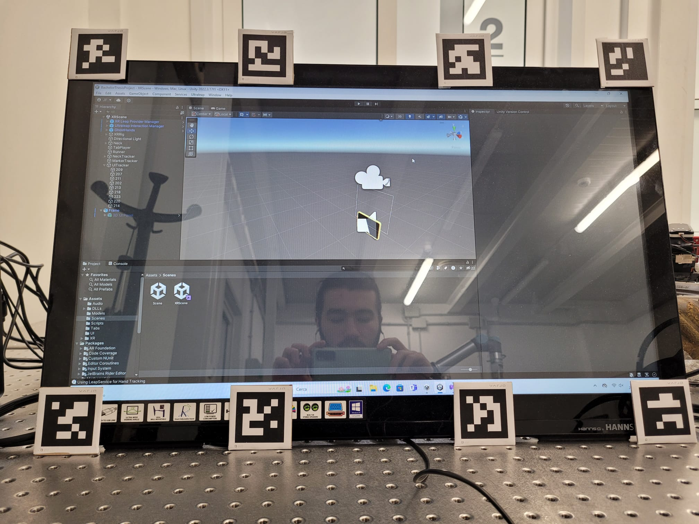

Ho provato l'implementazione del tracciamento della cornice, sembra funzionare bene, la differenza tra 3 e 8 marker si nota ma non e' pazzesca, comunque un miglioramento.
In mancanza dello specchio, correntemente ho messo i marker sul display del computer.
L'implementazione della cornice come progettata ieri e' stata abbastanza semplice con i tools forniti dall'Ultraleap Plugin.

Dopo l'implementazione ho valutato che questa non sia adeguata all'uso, questo e' per due motivi:
Dal momento che il Varjo XR-3 fornisce dati di tracciamento oculare dell'utente, una possibile alternativa e' fare si' che l'utente guardi gli elementi dell'interfaccia e ci interagisca con una gesture della mano, ad esempio la chiusura della mano. Questo approccio non sembra troppo complesso da implementare, e ho gia' provato ad implementare in un ora un sistema rudimentale che colora i bottoni osservati (per testare la funzionalita'). Il tracciamento nella demo del Varjo funziona perfettamente ma nel mio codice sembra essere allineato male, questo e' da risolvere.
Sono propenso a testare questo metodo dal momento che rimuove la necessita' di muoversi di posto per interagire con l'interfaccia e rimuove il problema di perdita di qualita' di tracciamento quando ci si avvicina alla cornice.
Oltre che essere mezzo funzionante per ora, il nuovo tipo di interazione richiede un interfaccia diversa, con elementi piu' grandi e disposti secondo altri criteri, dal momento che le necessita' con l'eye tracking sono molto diverse da quelle di interazione con le mani.